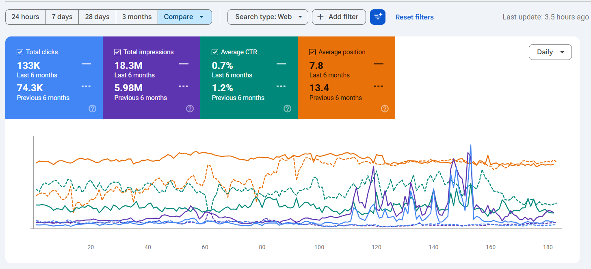
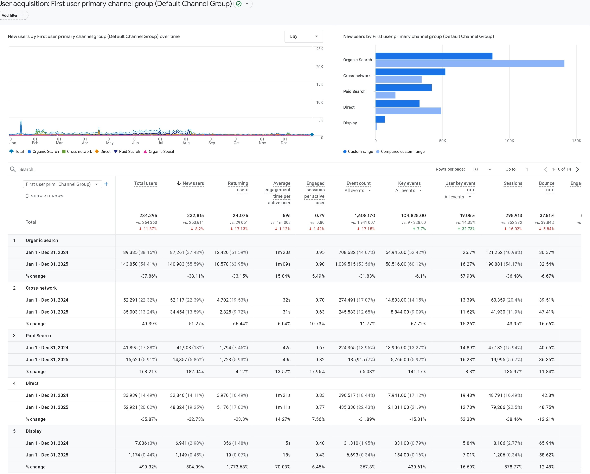
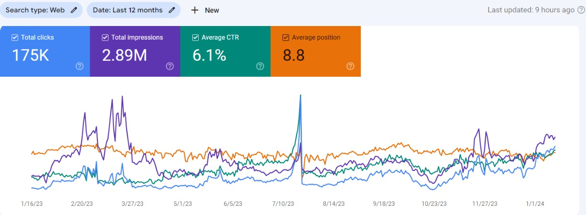
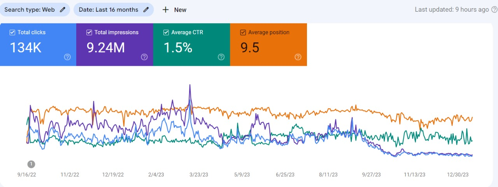
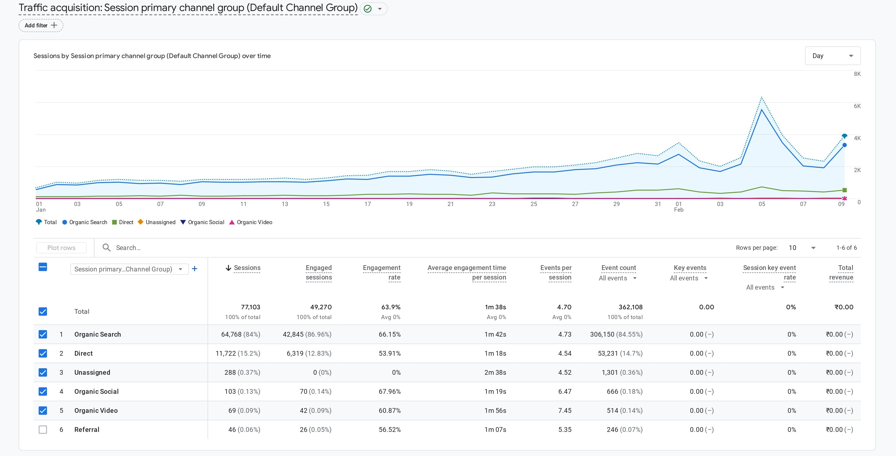

5+ years of hands-on SEO experience
SEO Consultant · Organic Growth Strategist
Do you want more organic traffic?
Hey, I’m Subhajyoti Karmakar. With over four years of hands-on experience, I help businesses rank higher, attract qualified leads, and turn search visibility into measurable growth.
A practical, proven approach
Why businesses trust my SEO approach
Managed 50+ SEO projects across industries
Proven experience in local SEO and lead generation
Focused on sustainable, long-term growth
SEO built for business outcomes, not vanity metrics.
5+Years in SEO
50+Projects managed
40KYouTube growth milestone
Trusted brands
Professional experience across teams at
Inspiria
Technogleam
Blue Minch
Hexamaze
Smartgalaxy
About me
SEO should make commercial sense.
I’m an SEO Consultant and Local SEO Expert with more than five years of hands-on experience helping organizations and businesses improve organic visibility, generate qualified leads, and strengthen their digital presence.
My experience covers technical SEO, content strategy, local SEO, link building, YouTube SEO, team leadership, and AI-assisted search optimization. I have managed more than 50 projects across education, hospitality, real estate, travel, medical, and local-service industries.
Strategy plus executionFrom audit and planning through implementation.
Business-focused SEOVisibility that supports leads and growth.
My SEO journey
From content operations to SEO leadership.
My career has developed through hands-on delivery, multi-industry client work, team leadership, and continuous learning across search and AI-assisted workflows.
View full resumeSEO Executive
Inspiria Knowledge CampusLeading organic growth, local SEO, content strategy, technical execution, team coordination, and AI-search optimization.
SEO Executive & Jr. SEO Executive
TechnogleamManaged 50+ projects, worked across multiple industries, coordinated a team, and handled client strategy and reporting.
SEO Assistant
Blue MinchDelivered audits, on-page improvements, local SEO, Google Business Profile management, and link building.
SEO Trainee
Hexamaze TechnologiesBuilt a strong foundation in keyword research, on-page SEO, reporting, and structured off-page campaigns.
Content Writer & YouTube Coordinator
Smartgalaxy Coaching CentreCreated 100+ scripts and supported video discovery, publishing, community engagement, and channel growth.
Who I work with
SEO support for businesses ready to grow.
My SEO services are designed for organizations that value practical strategy, clear implementation, and sustainable results.
Local service businesses
Improve local visibility and turn nearby searches into qualified enquiries.
Educational institutions
Build search visibility for programs, courses, locations, and admissions.
Travel & hospitality brands
Reach high-intent travelers through destination and service-led search.
Growing startups & consultants
Create an organic foundation that supports authority, leads, and scale.
Services
Focused SEO support, built around your goals.
From diagnosing technical roadblocks to building a scalable content engine, every engagement is shaped around what will create the most value.
Technical SEO
Uncover and resolve the issues limiting crawlability, indexation, speed, and organic performance.
- Technical SEO audits
- Site architecture
- Core Web Vitals
Local & YouTube SEO
Improve regional discovery and video visibility with practical, platform-specific optimization.
- Google Business Profile
- Local citations and visibility
- YouTube metadata and discovery
Content & Authority
Create search-led content and authority-building campaigns that improve visibility and trust.
- Keyword and competitor research
- On-page optimization
- Ethical link building
AI SEO Implementation
Use AI-assisted development to implement SEO improvements and automate repeatable workflows.
- Vercel and Sanity workflows
- Metadata and schema generation
- SEO audits, reports and monitoring
SEO & digital marketing tools I use
The right tools, guided by practical judgment.
Tools support research, implementation, measurement, and automation. Strategy and quality control remain human-led.
Google Analytics 4
User behavior and acquisition analysis
Search Console
Search visibility and technical monitoring
Tag Manager
Measurement and event implementation
Ahrefs
Keywords, backlinks, and competitors
Semrush
Research, audits, and reporting
Moz
Authority and search analysis
Business Profile
Local visibility and lead generation
AI Search Tools
Research and repeatable SEO workflows
Vercel
SEO-friendly web implementation
Sanity
Structured content and SEO workflows
Selected work
Growth you can see in the numbers.
Examples of how focused SEO strategy can turn organic search into a reliable acquisition channel.
Building authority for a low-visibility website
ProblemThe website lacked the authority needed to compete for valuable search terms.
ActionBuilt 450+ relevant backlinks through a structured, quality-focused off-page SEO strategy.
ResultImproved Domain Authority from 23 to 45, creating a stronger foundation for organic visibility.
23→45Domain Authority
450+Backlinks acquired
Scaling reliable SEO delivery across industries
ProblemA growing portfolio required consistent strategy, delivery, reporting, and client communication.
ActionCreated focused workflows while leading campaigns across hospitality, real estate, travel, education, healthcare, and local services.
ResultSuccessfully managed more than 50 projects, including 13+ concurrent campaigns.
50+Total projects
13+Concurrent projects
Improving educational reach through YouTube SEO
ProblemEducational videos needed stronger discoverability and a consistent content operation.
ActionProduced 100+ scripts and optimized titles, descriptions, tags, publishing, and audience engagement.
ResultSupported the channel’s growth to a 40K subscriber milestone.
100+Video scripts
40KSubscriber milestone
Selected achievements from professional experience. Results vary by market, starting position, and available resources.
GA4 & GSC performance
Reporting that connects search to growth.
Selected Search Console and GA4 screenshots showing real organic visibility, acquisition, and engagement performance across SEO projects.





Performance evidence: Screenshots are from selected projects. Identifying details are withheld where necessary.
Certificates
Continuous learning across search and analytics.
Selected SEO and digital marketing training listed in my professional resume.
SEO Fundamentals
Semrush Academy
International SEO
Semrush Academy
Technical & On-Page SEO
Semrush Deep Dive
Google My Business
Google certification training
Analytics & Digital Marketing
Google Digital Garage
SEO Certification
eMarketing Institute
Client testimonials
Professional feedback, published with permission.
I’m currently collecting verified client testimonials. Professional references are available directly on request.
“Add an approved client testimonial here.”
Client name · Company
“Add an approved recommendation about SEO delivery here.”
Client name · Company
“Add an approved quote about communication and results here.”
Client name · Company
How it works
A practical route from insight to implementation.
No bloated reports or mystery tactics. Just a transparent process that keeps priorities clear and momentum moving.
Start a conversation-
01
Discover
Understand your business, audience, competition, and current search performance.
-
02
Prioritize
Turn research into a focused roadmap ranked by impact, effort, and commercial value.
-
03
Execute
Implement improvements collaboratively, with clear ownership and quality control.
-
04
Measure & refine
Track meaningful outcomes, learn from the data, and keep improving what works.
Frequently asked questions
Clear answers before we begin.
If your question is not covered here, send me your website and the challenge you are facing.
Ask About Your WebsiteWhat SEO services do you provide?
I support technical SEO, local SEO, on-page optimization, content strategy, link building, YouTube SEO, reporting, and AI-assisted implementation.
Which businesses do you work with?
I work with local service businesses, educational institutions, travel and hospitality brands, startups, and independent consultants.
Can you implement recommendations?
Yes. I can support both strategy and implementation, including technical fixes, metadata, schema, content workflows, and SEO-friendly work with Vercel and Sanity.
How long does SEO take?
Timelines depend on competition, website health, authority, and resources. Sustainable campaigns usually require consistent work over several months.
Do you guarantee rankings?
No ethical consultant can guarantee a specific ranking. I focus on strong fundamentals, qualified visibility, measurable improvement, and long-term growth.
How do we get started?
Share your website, target market, primary business goal, and current challenge. I will recommend the most practical next step.
SEO insights & blogs
Practical ideas for stronger organic growth.
How to prioritize technical SEO fixes by business impact
Planned article topic — link will be added after publishing.
Turning Google Business Profile visibility into local leads
Planned article topic — link will be added after publishing.
Where automation helps SEO and where human judgment matters
Planned article topic — link will be added after publishing.
Ready to grow?
Build an SEO strategy around your business goals.
Let's work together
Let’s discuss your website.
Tell me about your business, current SEO challenges, and growth goals. I’ll come back with a practical next step.
hello@subhajyoti.comI’m currently collecting verified client testimonials. Feel free to request professional references directly.